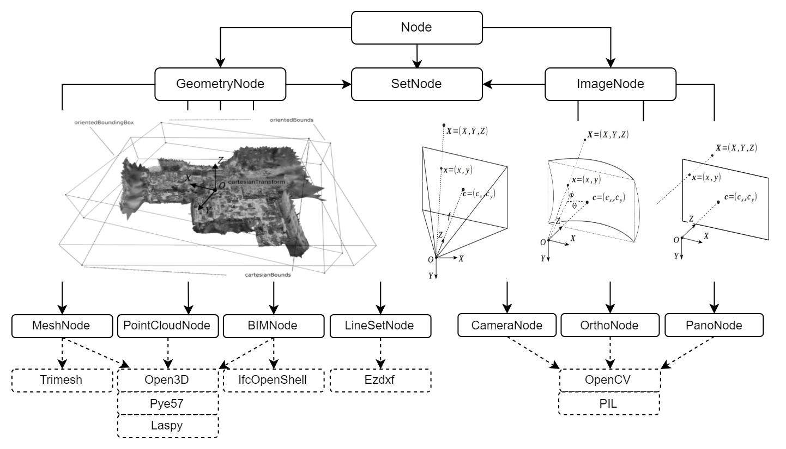
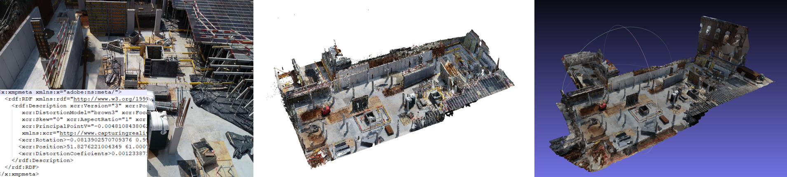
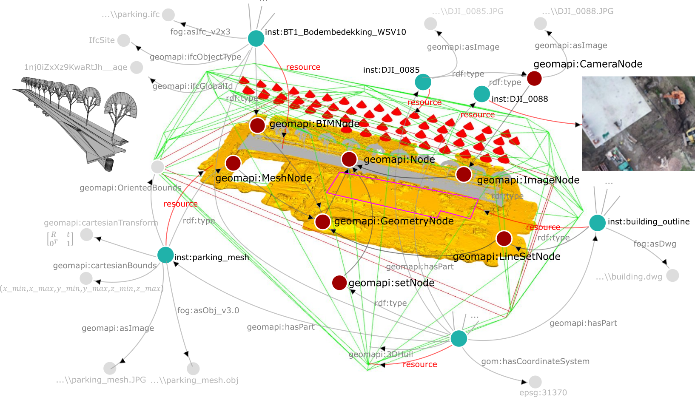

Getting Started
GEOMAPI manages close-range sensing resources like images and point clouds. It greatly expands the functionality of Open Source projects such as OpenCV and Open3D to create homogeneous and easy to use resources.
Installation
You will need a python environment (3.7 \(\leq\) x \(\leq\) 3.11) as Open3D currently doesn’t support python \(\leq\) 3.12 (due to Open3D dependencies). Use the package manager pip to install geomapi.
conda create --name geomapi_user python=3.11
conda activate geomapi_user
pip install geomapi
Using Nodes
a Node is a unit that stores both data and metadata from close-range sensing data. They handle different types of data, like point clouds or images, and they contain detailed information such as location, shape, and relevant properties. This structure helps in efficient querying and analysis of the data.

Initialisation
Consider the following nodes from the testfiles, built from either a path, a data resource or piece of metadata. Additionally, we can build nodes from Linked Data Graphs!
from geomapi.nodes import ImageNode, PointCloudNode, MeshNode, BIMNode, Node
pcd=o3d.io.read_point_cloud('../tests/testfiles/pcd/parking.pcd')
pcdNode = PointCloudNode(resource=pcd) # built from resource or data
meshNode= MeshNode (path='../tests/testfiles/mesh/parking.obj') # .stl and .obj are supported
imgNode=ImageNode(xmpPath='../tests/testfiles/img/DJI_0085.xmp') # .xmp contains pose information from CapturingReality software. MetaShape .xml is also supported.
bimNodes=tl.graph_to_nodes('../tests/testfiles/graphs/graph.ttl') #loads nodes from a graph file representing an IFCfile with BIM objects.

As you can see, each Node inherits the Base Node properties so they can be created in a very similar way. Look at the Node Tutorial notebooks to learn more about how to create and use nodes.
Functionality
The cool thing about these Nodes is that they can be jointly queried. We can find neighboring nodes way faster by not using the actual data!
import geomapi.tools as tl
tl.select_nodes_k_nearest_neighbors(pcdNode,[meshNode,imgNode,bimNodes],k=1) #selects the k nearest neighbors of a point cloud node from a list of nodes
([<geomapi.nodes.meshnode.MeshNode at 0x1d6ea7c2170>], DoubleVector[2.09905]) # the meshNode is the closest Node 2m away!
GEOMAPI divides functions into three layers.
Utilities: Base functions for point clouds and images that support the Node system
import geomapi.utils as ut
from geomapi.utils import geometryutils as gmu
Nodes: Node specific functions such as projecting rays from an ImageNode in 3D, mutations, surface sampling, etc.
imgNode=ImageNode(xmlPath='../tests/testfiles/img/road.xml', path='../tests/testfiles/img/101_0367_0007.JPG')
imgNode.create_rays(imagePoints=[[0,0],[0,1],[1,0],[1,1]],depths=25) #creates rays from image points
Tools: Functions that combine nodes for distance calculations, intersections, analyses, etc.
import geomapi.tools as tl
import geomapi.tools.progresstools as pgt
pgt.project_pcd_to_rgbd_images (pointClouds, imgNodes, depth_max=15)
Look at the Tutorial section to learn more about how to use the different functions.
Ontology
GEOMAPI works with Linked Data to define the concepts, relationships and functions. At its core, it uses the in-house geomapi ontology that is linked to specific functions within the GEOMAPI toolbox. For instance, every Node has an RDF Graph mimic, allowing to interact with any online resource.
Visit the Ontology Tutorial to learn more about the ontology and what we do with it.

Continue to the next sections to learn more about each part of the GEOMAPI structure.